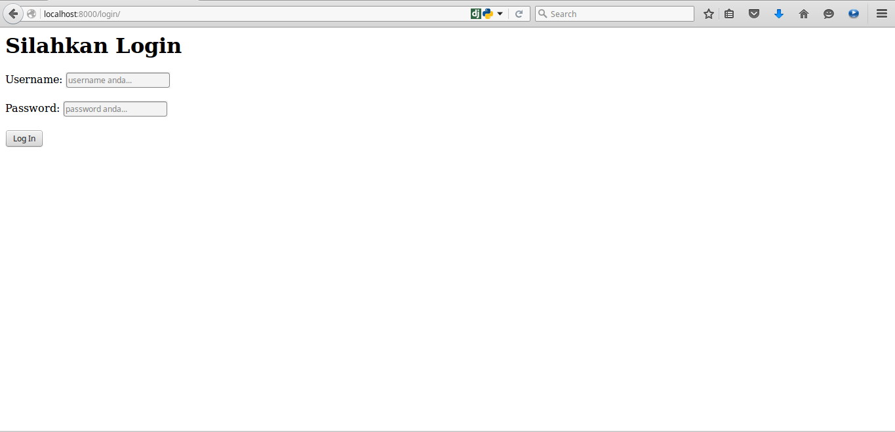
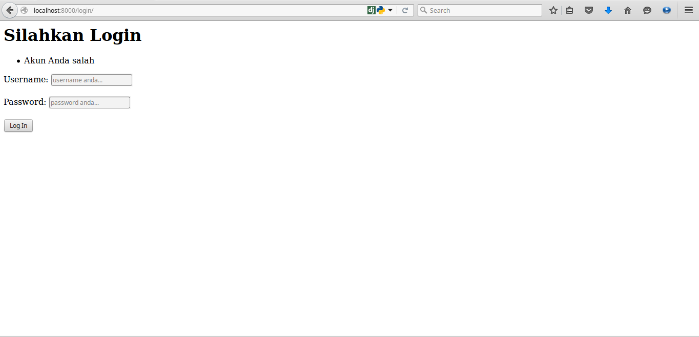
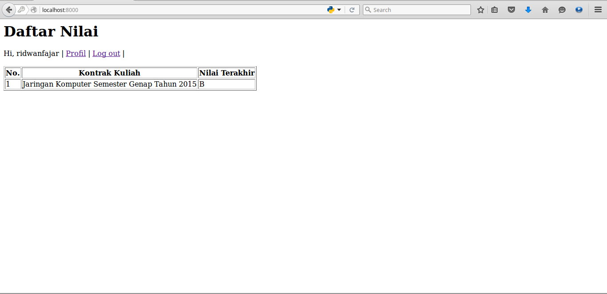
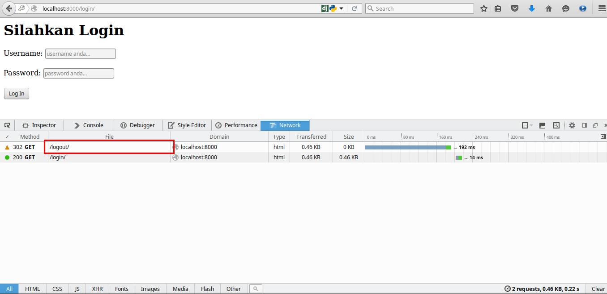

Autentikasi adalah salah satu kewajiban bila Anda ingin membuat sebuah fitur dari aplikasi web yang hanya dapat diakses oleh user tertentu. Umumnya autentikasi terdiri dari dua proses yaitu login dan logout, setelah login maka kita dapat menyimpan beberapa data di session untuk digunakan terus di berbagai halaman lain. Di tutorial ini, kita akan menggunakan sistem autentikasi Django. Kita juga akan menggunakan pembatas untuk setiap views yang dinamakan dengan decorator.
Jadi di kode homepage/views.py ini, kita akan melihat ada beberapa views yang diatasnya terdapat sebuah decorator dengan nama login_required(). Oleh karena itu mari kita lanjutkan tutorial ini.
Sekarang kita persiapkan berbagai views yang akan kita bangun di apps homepage. Sebelum membuat berbagai views, kita import terlebih dahulu modul Django dan models di apps lain yang akan diperlukan. Kemudian kita buat juga kerangka untuk views login, logout, dan index. Silahkan buat kode berikut di dalam homepage/views.py:
from django.shortcuts import render, redirect
from django.http import HttpResponse
from django.contrib.auth import authenticate, logout, login
from django.contrib import messages
from django.conf import settings
from django.contrib.auth.decorators import login_required
from kuliah.models import *
from homepage.forms import *
from akses.models import *
# Create your views here.
def login_view(request):
return HttpResponse('login...')
def logout_view(request):
return HttpResponse('logout...')
def daftar_nilai(request):
return HttpResponse('daftar nilai...')
Kemudian sekarang kita buat juga beberapa form yang akan digunakan untuk proses validasi data yang dikirim dengan method POST. Data yang akan divalidasi adalah biodata mahasiswa dan user yang akan diisi saat mengubah profil. Form Django dapat menghasilkan elemen form secara otomatis hanya dengan memanggil namanya saja di dalam template. Kemudian widget setiap form pun dapat diatur jenis input-nya agar disesuaikan dengan kebutuhan kita, misal ada TextInput() dan Textarea().
Karena kita akan menggunakan ModelForm, Django dapat membantu kita memvalidasi data yang dikirimkan sesuai definisi yang ada di models.py. Sehingga data yang dikirimkan akan dijamin sesuai dengan tabel yang akan dibuat nantinya. Sekarang silahkan buat dulu file dengan nama forms.py di dalam folder homepage. Kemudian buat kode berikut di dalam file homepage/forms.py:
from django import forms
from django.contrib.auth.models import User
from akses.models import Akun
class UserForm(forms.ModelForm):
class Meta:
model = User
fields = ['first_name', 'last_name', 'email']
widgets = {
'nama_depan': forms.TextInput(),
'nama_belakang': forms.TextInput(),
'email': forms.TextInput(),
}
class AkunForm(forms.ModelForm):
class Meta:
model = Akun
fields = ['no_telp', 'alamat', 'website']
widgets = {
'no_telp': forms.TextInput(),
'alamat': forms.Textarea(),
'website': forms.TextInput()
}
Kode tersebut akan digunakan di views mengubah profil nantinya.
Sebelum melanjutkan koding, sekarang kita tambahkan dulu url di academica/urls.py untuk menghubungkan views dengan URL yang diinginkan. Kita hanya akan menyambungkan tiga URL dahulu. Silahkan sesuaikan urlpatterns dan import seperti pada kode berikut:
from django.conf.urls import url
from django.contrib import admin
from homepage import views as home_views
urlpatterns = [
url(r'^admin/', admin.site.urls),
url(r'^$', home_views.daftar_nilai),
url(r'^login/$', home_views.login_view),
url(r'^logout/$', home_views.logout_view),
]
Untuk proses login, kodenya cukup tricky dimana kita akan memeriksa terlebih dahulu apakah request yang datang adalah POST atau bukan. Kemudian kita authenticate terlebih dahulu apakah user sudah terdaftar ke sistem atau belum. Apabila tidak user tersebut di sistem maka akunnya salah. Bila ada, maka akan diperiksa apakah user sudah aktif atau belum. Bila sudah aktif maka akan diperiksa lagi apakah sudah terhubung ke data mahasiswa atau belum karena hal ini dilakukan untuk dapat mengambil data nilai dan data profil mahasiswa sesaat user tersebut berhasil login. Terakhir akan kita simpan beberapa data di session.
Silahkan buat views login_view di dalam file homepage/views.py:
ef login_view(request):
if request.POST:
user = authenticate(username=request.POST['username'], password=request.POST['password'])
if user is not None:
if user.is_active:
try:
akun = Akun.objects.get(user=user)
login(request, user)
print akun
request.session['username'] = request.POST['username']
request.session['email'] = akun.user.email
except Exception, e:
print e
messages.add_message(request, messages.INFO, 'Akun ini belum terhubung dengan data mahasiswa, silahkan hubungi administrator')
return redirect('/')
else:
messages.add_message(request, messages.INFO, 'Anda belum terverifikasi, silahkan hubungi administrator')
else:
messages.add_message(request, messages.INFO, 'Akun Anda salah')
return render(request, 'login.html')
Karena kita akan menggunakan template alias HTML, maka kita akan membuat sebuah kode HTML yang ditenagai oleh sistem template Django. Di dalam sebuah form Django, Anda tidak dapat begitu saja membuat form, Anda harus membubuhkan csrf_token agar form Anda dipastikan aman oleh Django.
Silahkan buat kode template berikut di dalam file homepage/templates/login.html:
<h1>Silahkan Login</h1>
<form action="/login/" method="POST" role="form">
{% csrf_token %}
{% if messages %}
<ul>
{% for message in messages %}
<li>{{ message }}</li>
{% endfor %}
</ul>
{% endif %}
Username:
<input type="text" name="username" value="" placeholder="username anda..." />
<br/>
<br/>
Password:
<input type="password" name="password" value="" placeholder="password anda..." />
<br/>
<br/>
<input href="javascript:void(0);" value="Log In" type="submit"/>
</form>
Dan berikut adalah tampilan halaman login dalam berbagai kondisi:



Untuk halaman index akan kita arahkan ke views daftar_nilai dimana views tersebut akan dilindungi oleh decorator login_required(). Kemudian kita ambil data akun yang id-nya disimpan di session. Kemudian setelah dapat data akun maka kita ambil data kuliah yang dikontrak mahasiswa tersebut dan diurut berdasarkan jadwal kuliah. Kemudian data hasil query akan ditampilkank di view homepage/templates/index.html:
@login_required(login_url=settings.LOGIN_URL)
def daftar_nilai(request):
akun = Akun.objects.get(user=request.user.id)
daftar_kontrak_kuliah = KontrakKuliah.objects.filter(mahasiswa=akun.mahasiswa).order_by('-jadwal_kuliah__mulai_kuliah')
return render(request, 'index.html', {'daftar_kontrak_kuliah':daftar_kontrak_kuliah})
template.html:
<h1>Daftar Nilai</h1>
Hi, {{ request.session.username }} | <a href="/profil/">Profil</a> | <a href="/logout/">Log out</a> |
<br/> <br/>
<table border="1">
<thead>
<tr>
<th>No.</th>
<th>Kontrak Kuliah</th>
<th>Nilai Terakhir</th>
</tr>
</thead>
<tbody>
{% for kontrak in daftar_kontrak_kuliah %}
<tr>
<td>{{ forloop.counter }}</td>
<td>{{ kontrak.jadwal_kuliah.nama }}</td>
<td>{{ kontrak.nilai_akhir }}</td>
</tr>
{% endfor %}
</tbody>
</table>
-- gambar index
Kode untuk logout lebih sederhana. Anda cukup melewatkan request pada method logout() kemudian me-redirect halaman ke halaman login. Silahkan buat kode logout berikut di homepage/views.py:
def logout_view(request):
logout(request)
return redirect('/login/')

Modul ketiga sudah beres, dan saatnya kita ke modul terakhir :D